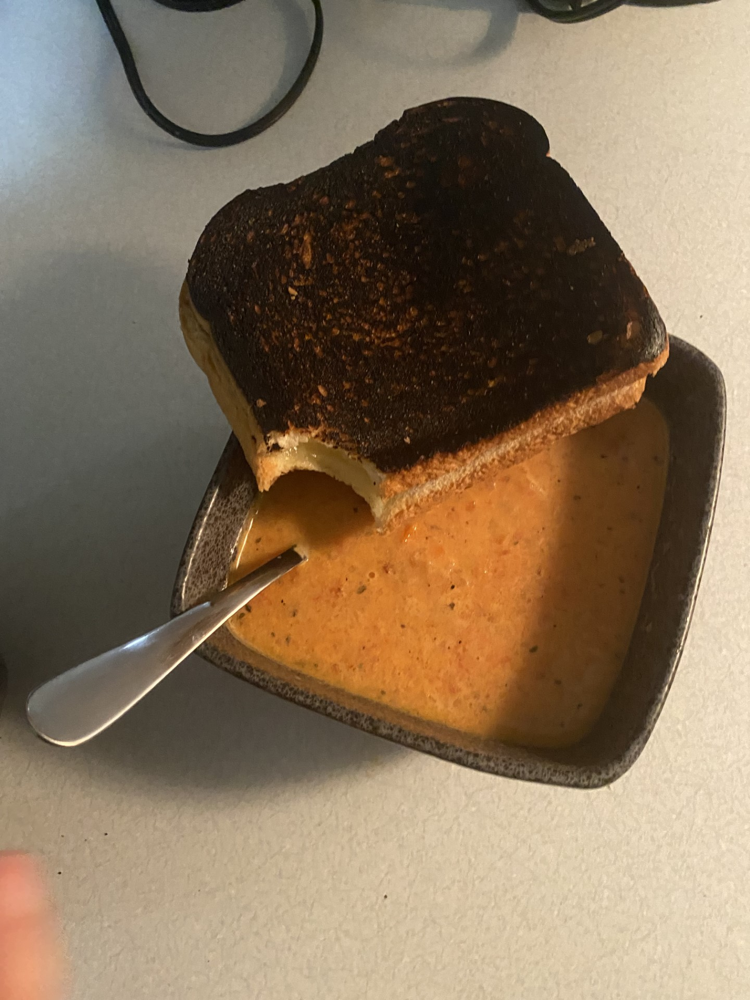
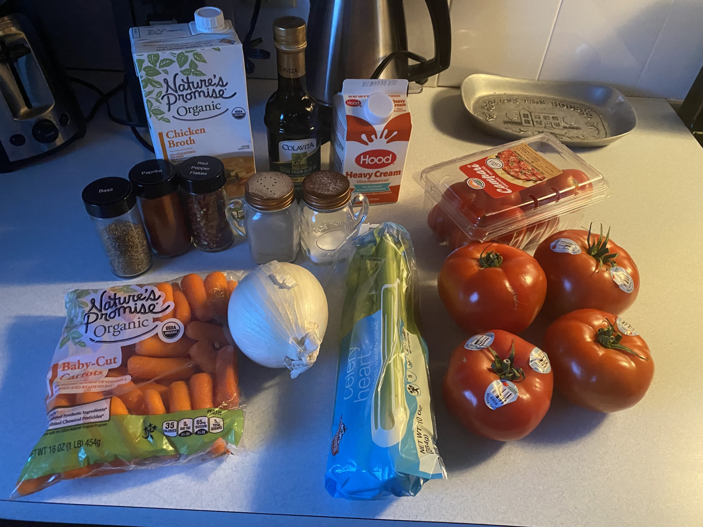
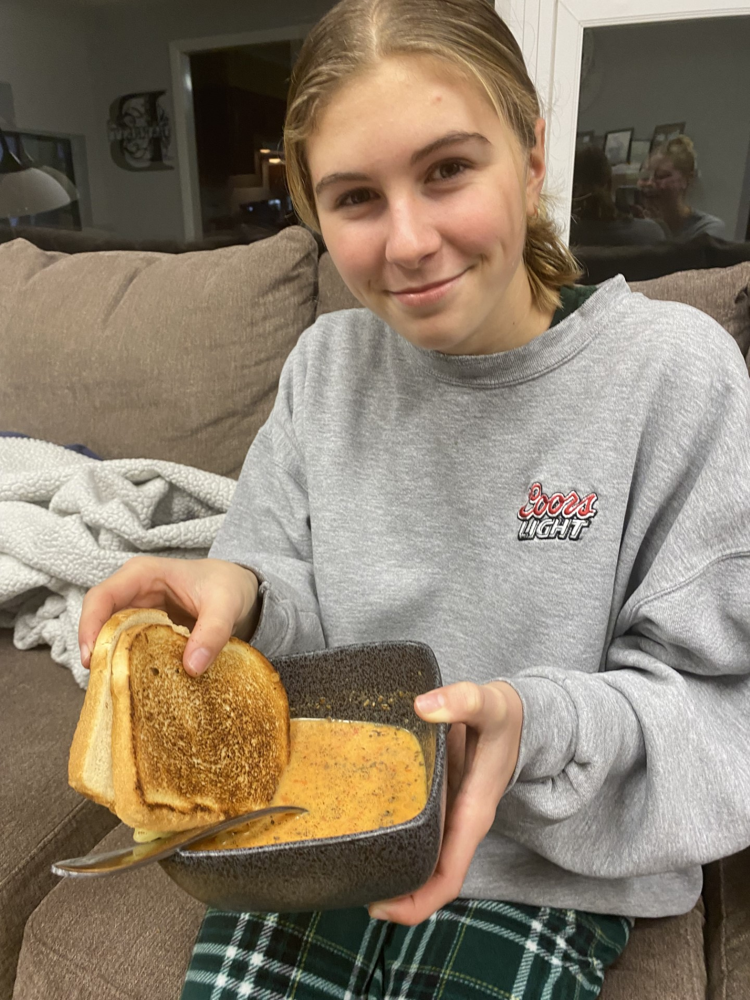

I choose to make tomato soup for my first cooking experience because I really enjoyed making this recipe and it ended up being pretty simple and tasted very good. The instructions were easy to follow and it was helpful because my sister helped me cook this recipe so it was nice working with someone else.
My Rating of this Recipe: 7/10
I think this was a good starting point and is very easy to make.

Listed below are the ingredients and instructions I followed to make this recipe at Gimme Some Oven.
Ingredients Necessary:
- 4 large tomatos (we used 8 small tomatos also)
- 3 tablespoons olive oil
- salt and pepper
- 1 large onion
- 1 cup of celery
- 1 cup of carrots
- 3/4 teaspoon paprika
- 1/4 teaspoon red pepper flakes
- 2 1/2 cups vegetable broth
- 1/2 cup heavy cream
- Optional Toppings: parmesan cheese, croutons, sour cream, fresh basil

Here is an image of what ingredients I used.
Instructions:
- Begin by cutting the onion and place that in a sauce pan on medium heat with olive oil.
- Cut up carrots, celery, and tomatos and add those to the pan. Add broth and let that sit for a few minutes.
- Place the mixture in a blender to get the smoother texture and this took a couple rounds of doing it because it wouldn't all fit in the blender.
- Place that back on low heat and add spices and heavy cream. Stir and let it sit for a few more minutes.
- Serve and Enjoy!
Personal Insights:
This recipe was really easy to follow and was pretty quick to make. We also had grilled cheese with the soup!
My sister helped me make this recipe which she also really likes, and I think the only challenge was using the blender because it tooks 3-4 times of blending to get everything blended.
